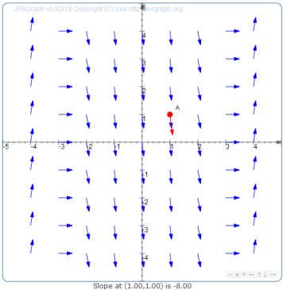

| Consider a differential equation $\displaystyle\frac{dy}{dx}=f(x,y)$. Since the derivative is the slope of the tangent line, we interpret this equation geometrically to mean that at any point $(x,y)$ in the plane, the tangent line must have slope $f(x,y).$ We illustrate this with a slope field, a graph where we draw an arrow indicating the slope at a grid of points. The slope field for $\displaystyle\frac{dy}{dx}=x+y+2$ is illustrated at the right. | |
 |
The solution to a differential equation is a curve that is tangent to the arrows of the slope field. Since differential equations are solved by integrating, we call such a curve an integral curve. This picture illustrates some of the integral curves for $\displaystyle\frac{dy}{dx}=x+y+2$. You can see there are a lot of possible integral curves, infinitely many in fact. This corresponds to the fact that there are infinitely many solutions to a typical differential equation. To specify a particular integral curve, you must specify a point on the curve. Once you specify one specific point, the rest of the curve is determined by following the arrows. This corresponds to finding a particular solution by specifying an initial value. |
"y(-4) ="| At the right is the slope field for $y' = f(x,y)$. Based on the graph, identify where the function $f(x,y)$ is positive, negative, and zero. Is $f(x,y)$ a function of $x$ alone, $y$ alone, or a function of both variables together? Find a function $f(x,y)$ whose slope field looks like this. |  |
| At the right is the slope field for $y' = g(x,y)$. Where is the function $g(x,y)$ positive, negative, and zero? Is $g(x,y)$ a function of $x$ alone, $y$ alone, or a function of both variables together? Find a function $g(x,y)$ whose slope field looks like this. |  |